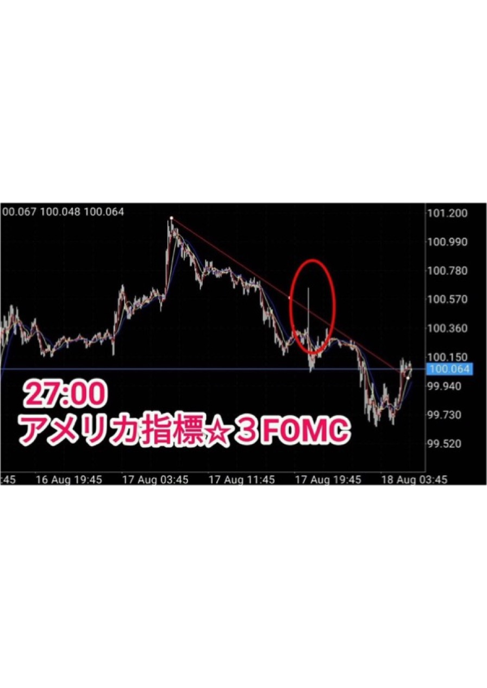
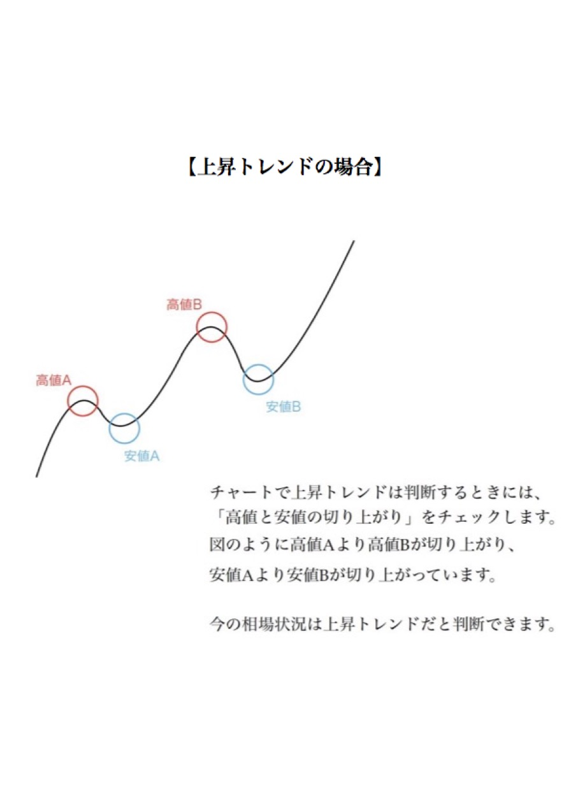
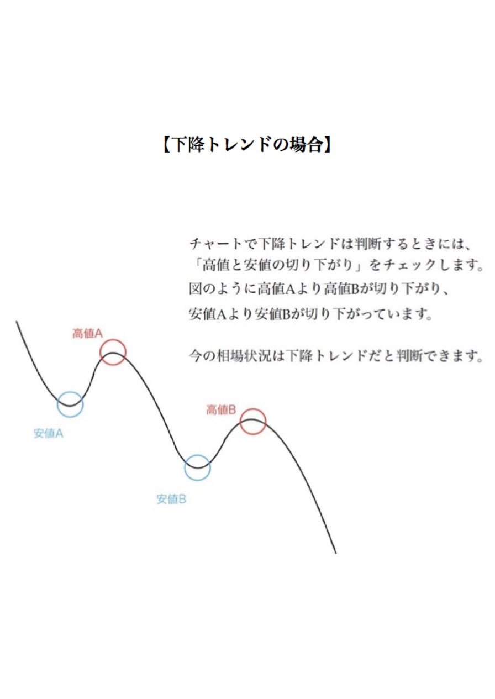
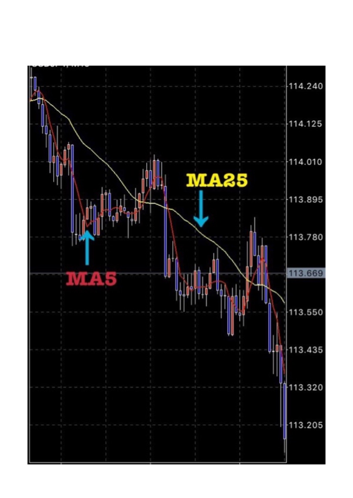
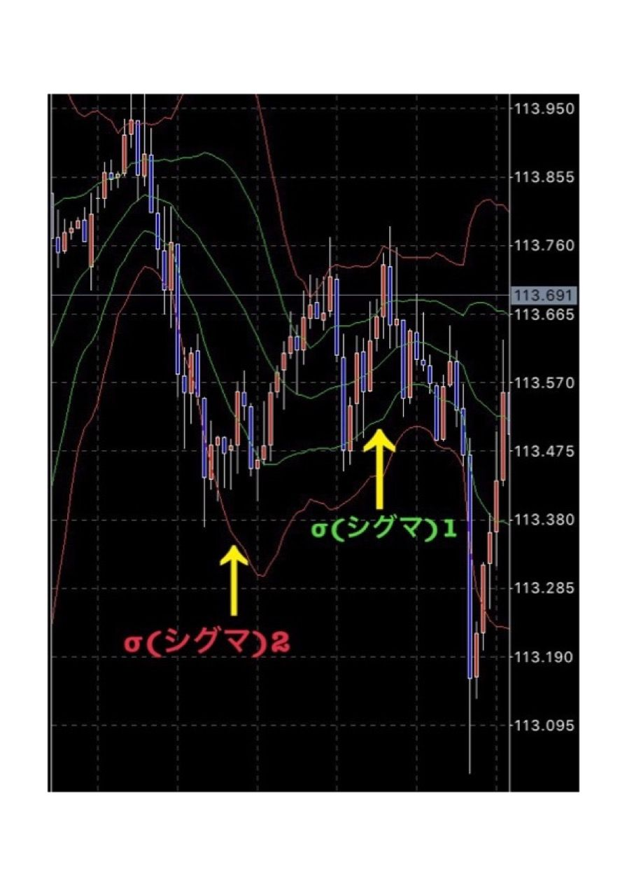

| FXで稼ぐ極意 | |
| 竹中亮祐 | |
| (2019) | |
この本を読んでいる皆さんは、実際にＦＸをやったことのある人がほとんどかと思います。しかし、今までトレードした中で、大きく結果が出せているという人は、あまりいらっしゃらないのではないでしょうか。
実は、ＦＸを始めたほとんどの方は、大きく収益を出せずに、どちらかというと損益の方が多く出てしまう傾向があります。もし仮に、あなたがサラリーマンで働きながらＦＸをされているのであれば、「結果を出している人って、専業のプロトレーダーだからでしょ？」「会社で働きながらＦＸで結果出すなんて、どうせ無理...」と考えている人もいるのではないでしょうか。
しかし、「サラリーマンだから結果が出ない」というのは違います。「専業のプロトレーダーだから、結果が出せる」という訳でもありません。
私はこれまで、FXのトレードノウハウなどご案内してきたメンバーさん達は、ほとんどがサラリーマンとして、会社で働きながらトレードしています。もちろん、ＦＸ経験者でなく、私の情報配信などを見てからＦＸを本格的に始めたメンバーさんばかりです。
私自身、元々企業で働いていたサラリーマンでした。「起業しよう」と決意してからはサラリーマンを辞め、会社を立ち上げたのちにＦＸなど資産運用も始めて、今に至ります。今はＦＸで順調に収益を上げていますが、最初はＦＸ初心者でした。生まれつき特別なスキルや、センスがあった訳でもありません。
このように、「会社員だから、ＦＸで結果が出せない」という訳ではないのです。皆さんがＦＸで結果が出せないのには、必ず理由があります。私はこれまで運用をしてきた経験などを元に、皆さんがＦＸで結果が出ない理由をしっかりとお伝えしたく、この本を出版しました。
もちろん、ＦＸで結果が出ない理由だけではありません。「どうすればＦＸで結果が出せるのか」といった、改善点も具体的にお話ししています。
今のあなたが満足のいく運用が出来ていないのであれば、ぜひ最後まで読み進めてみてください。あなたがこれからやるべきことが、明確になるでしょう。
冒頭でもお話ししたように、この本を読んでいる皆さんは、「ＦＸを始めてみたけれど、なかなか思うように結果が出ない」と考えている人がほとんどだと思います。ＦＸで結果が出せずに悩んでいる人も多いはずです。では、どうしてＦＸで大損する人と、大きく収益を上げる人に分かれるのでしょうか。
まずは、ＦＸの特性からお話ししていきたいと思います。
ＦＸの取引は株式や債券といったほかの有価証券全般以上に「勝ち」と「負け」の差がはっきりとでる運用商品です。
他の金融商品と違い、「レバレッジ（自分の手持ち資金以上に大きく売買できる）が25
倍かけられる(証券会社による)」という特性があります。それによって「上手くいけばサラリーマンの月収並みの利益が簡単に出せる」一方、実際に経験された人もいるもしれませんが、「大きく損をする可能性」があるのです。
こういった「うまくやれば簡単に大きな利益を出せる」特性上、プロの専業トレーダー・投資家はＦＸで大きな利益を出し続けておられる方も多く、年々億万長者が生まれています。
とはいえ、「プロで専業のトレーダーだから、結果が出ているのでは？」と思われるかもしれませんが、そうではありません。プロのＦＸトレーダーの手法を知り、皆さんも実践することで、独学でＦＸを行うよりも結果が出やすくなります。
この章ではそういった「プロ」がどのように取引を行って利益を出せているのか、またＦＸ運用における基本的な注意事項などを解説し、皆さんが「利益を出せる側」になっていただけるような内容をお話していきます。
ＦＸに限らず、なんでも「安定した結果を出すプロ」というのは独自の手法を持っています。
投資・金融の業界だけで想像するとイメージがしにくいので、まずは身近な「美味しい料理を出す飲食店」について、頭の中で想像してみてください。
いつ行っても満席で繁盛している、美味しい料理を出す飲食店があったとします。
いつでも美味しい料理を出す（安定した結果を出す）、というのが繁盛している店舗（利益を出す）基本であることは言うまでもないことです。
では、そこで想像してみてください。「常においしい料理を出す繁盛店」は、料理のレシピ（手法）をその時々でコロコロと変えているでしょうか？...答えは「Ｎｏ」です。
この繁盛している飲食店の「料理レシピ」にあたるものが、ＦＸの「ノウハウ」です。
では、この「レシピ」が不味い料理を作るものだったら、お店はうまくいくでしょうか？ これも答えは「Ｎｏ」です。ＦＸ運用においても結果が出ないのは、これと同じ「間違ったノウハウを使っているから」にほかなりません。
これが「ＦＸに限らず運用でなかなか結果が出ない」という理由です。
身近なことに置き換えて考えてみれば至極当然のことなのですが、「投資」という固定観念が強い業界ですと、こういった「常識」をついつい見落としてしまいがちになり、結果として収益が伴わないということがよくあるのです。
では、結果が出ている人はどのようにしてＦＸのトレードを行っているのでしょうか？
もう少し掘り下げましょう。
引き続き、先ほどの「料理レシピ」の話を想像してみてください。
例えば、店舗経営において「その時々の気分」で顧客に提供する料理（ＦＸでいう売買手法）にアレンジを加えて、「安定して」結果を出し続けることができると思いますか？
大抵の場合、「ハズレ」をいつかは引いて、評価（収益）を落とすことになります。この部分に関しては正直、「相場に対するカン」や「今までの経験による蓄積（経験則）」などによって、どの程度うまくいくかは個人差があります。人によっては適当にアレンジしたレシピが7割うまくいく方もいれば、３割程度しか上手くいかないこともあります。
資産運用に限らず、結果を「安定して出し続ける」には決まった手法を継続して実践し、「感情」によるブレを可能な限り少なくすることから入ります。これが料理でいえば「レシピ」、ＦＸ投資でいえば「ノウハウ」です。
その時々に応じて「本来は塩を小さじ一杯だけど、上手くいく気がするから三杯いれよう！」なんてことを日常的に行っていると、いつかは手痛い失敗をします。当たり前の話ですね。
こういった考え方が運用の現場でも重視されており、近年では「決まったノウハウを順守して行う取引手法」に注目が集まっています。これを運用用語で「システムトレード」と呼び、「決まったシステム（ノウハウ）で売買することにより、相場状況が変化するまで安定した結果を出し続ける」運用手法となります。
悲しい現実ですが、「なんとなくの勘」で売買して利益を出し続けられる天才は、ごくごく一握りです。
「投資の神様」として名高いウォーレン・バフェットですら、「勝利の鉄則は、自分の理解できることだけを繰り返すことだ」という見解を示しています。「勝利の方程式」ともいえるノウハウを取得し、感情を排除して繰り返すことがＦＸの勝ち組になるための第一歩です。
そして、結果が出ている人は正しい手法、つまりＦＸのプロから教わっています。それこそＦＸのプロトレーダーでも10
人いれば10
通りのやり方がありますが、プロと同じようなノウハウでトレードすれば結果が出しやすいのです。
皆さんの中には自分で調べたノウハウでトレードしたけど、負けてしまった...という人も中にはいるかと思います。しかし、それは以前勝ったノウハウを、また用いているから負けてしまった可能性があります。
皆さんはこれまでに、ＦＸで損益が出てしまった一方で、勝った経験も何回かあるはずです。
しかし、その時に勝てた手法を次のトレードに使っていませんか？ もしその時にＦＸで勝てた手法を使ったとしても、「あの時勝った手法でトレードしたのに、勝てなかった...」という人も中にはいるのではないでしょうか。このように、ＦＸではその時に勝った手法で、次のトレードでも同じ手法で勝つことは、ほぼありえません。「同じ手法がいつまでも使える」という「おいしい話」は「詐欺」以外に存在しないのです。それはなぜでしょうか。
理由としてはシンプルで、「相場状況の変化」と「認知性」の２つが挙げられます。
まず「相場状況の変化」ですが、これは単純にマーケットにおける状況が刻一刻と変化することにより、「取引手法も古くなる」のです。
分かりやすい例ですと、「アベノミクス」が挙げられます。アベノミクスは「円安の誘導による株高と、それに付随した企業業績の改善およびデフレの脱却」を目指す政策ですね。こういった「政治的な意向」により為替は円安方向に舵を切ることになった状況下で、「円高時代にうまくいっていたノウハウ」がそのまま機能し続けるでしょうか？ ノウハウにもよりますが、大抵の場合は「何らかの想定していなかった不具合が発生する」と考えた方がいいでしょう。
次に「認知性」。これは単純に「効果がある」と知られすぎたために、逆に効果がなくなってしまうという状態です。
どういう事かといいますと、例えば「チャートが○○という状態になったら、高確率で下がるので売りましょう！」というノウハウがあったとします。
これが広く「認知」されてしまうと、プロの運用者の中には
「チャートが○○になったら下る、ということはこの状態で売りが入るな...。こういった状況下で逆に大口の買いを入れ続ければ売っている人たちは損失が広がり、いつかはギブアップして買い戻さざるを得ない状況になる。そうすれば反動（買戻し）で価格は上がるから、ノウハウを逆手にとって儲けられる！」
...という考えをする方がでてきます。これが「認知」されることによってノウハウの効果がなくなってしまう一例です。
ちなみにこういった「（他人の）売りポジション（売買）を逆手にとって利益を上げようとする」方法を「スクイーズ」と呼びます。
そしてＦＸのプロからノウハウを教わっているのに、ノウハウ通りにトレードせずに自己流でトレードしてしまっている人も当てはまります。「前にトレードした時は、このやり方で勝てたから、次もいけるでしょ」という世界ではないのです。
これらが「同じノウハウを使い続けても利益を出し続けられない」理由です。状況に応じ、新たなノウハウを順次、仕入れるようにしましょう。
これまでＦＸのノウハウについてお話ししましたが、ノウハウを習得しただけでは、ＦＸで収益を上げ続けることはできません。資金管理を徹底することも、ＦＸでは重要なのです。
ＦＸで収益を上げる方法において必ず重視されるポイントが「資金管理」です。この部分をおろそかにすると、いかに優れたシステム（ノウハウ）であっても失敗してしまします。
例えば、「○○という状況で、75
％
の確率で価格が上昇する」というノウハウがあったとします。勝率75
％
のノウハウに、常に「全力投球」で資金を全部つぎ込み続ければ、いつかは負けてしまいますよね？ これが、「収益を上げるために資金管理を徹底することの重要性」です。
この部分に関してはＦＸ云々といった問題ではなく、個々の投資家における「リスク許容度」によって取り扱いが変わってきます。具体的には、「自己資金の額」と「許容できる損失の額」に応じ、売買における資金管理の設計を行います。
そして、たとえ負ける日があったとしても「今日は負ける日だったんだな」と割り切ることが大切です。そして「今日は負ける日だったんだな」と許容できた人が、結果的に勝つことができますし、許容できなければ大損してしまうのです。
投資というのは「リスク＝リターンである」という原則の元で市場が運営されていますので、「利益を出したい額の分だけ、損も覚悟しておかなければならない」という事になります。このあたりを留意して、キッチリと資金管理を行うようにしましょう。
ここまで、ＦＸで大損する人と利益をしっかり得られる人の違いについてお話ししましたが、イメージはつきましたでしょうか。今「自分のトレード手法があっている」と思ってトレードしつつ負けていた人も、「今のやり方が間違っているのかもしれない」ということに、お気付きいただけたのではないかと思います。
そして第２章では、ＦＸで収益が上がる仕組み、損してしまうカラクリについて、具体的に解説していきたいと思います。
経済指標の一つである「アメリカの雇用統計」は、日本時間の毎月第一金曜日に発表されます。皆さんご存知の通り、経済指標発表時は、為替が大きく変動します。皆さんの中で、「経済指標発表の時に取引して損した...」という人もいるのではないでしょうか？
経済指標の発表時、もっている為替レートが大きく変動し、予想以上に損益が発生してしまったというのは、トレードを行う上で誰しもが経験することです。そもそもなぜ「経済指標」によってトレードに影響がでるのでしょうか。
それはＦＸに限らず、マーケットというのは「現在の価値」ではなく「将来の価値」、つまり「○○があればこうなるだろう」という「予測」を元に価格が形成されているからです。
例えば、この本を出版した２０１７年現在のイベントで例を出すなら、「アメリカの利上げ」があります。
利上げされる、つまり金利が上がるなら、それに伴い「米ドル」を保有することによる収益が上がります。それにより「ドルを保有する方（ドル買い）」が増える「だろう」という憶測の元でドルが買われ、結果として円安ドル高（１１０円→１１５円、という動き）に価格が導かれることになります。
例えば今回の「利上げ」ですが、これを決定するＦＲＢ（アメリカの中央銀行）理事会は「雇用」の数値を重視しており、「雇用が安定した」と判断すれば「利上げをする」ということを明確にしています。
つまり経済指標における「雇用統計」の結果が市場予測を上回れば「アメリカは利上げする（だろう）！」という憶測に基づきドルが買われ、結果としてドル円が上昇します。
経済指標ごとにこういった「関連性」があり、これがFX取引においてトレードに影響が出る理由です。
先の項目による「急な市場の反応」というのは、指標が発表された瞬間に発生します。ご参考に実際のチャート画面をご覧いただきたいと思います。以下は経済発表時のチャート画面です。為替が大きく変動していることが分かりますね。

つまり、チャート機能でいう「１分足」のようなものにリアルタイムで色濃く反映され、逆に「15
分」や「１時間」といった長めの期間をベースに設定されている足には「突発的に価格が動いた」という結果のみが表示されます。
そのため経済指標の影響が多い銘柄においては１時間や15
分といったチャートの利用は「参考程度」に留め、メインは１分・５分といった足を活用します。
こういった事情を知らないまま、「１時間足ではこうなっているから、こういう風に売買しよう！」という意思決定を行ってしまうと大きな損失が発生してしまう可能性がありますので、注意が必要です。
長期的目線で財務的な分析をベースに投資することを「ファンダメンタル分析」、チャートのみで売買することを「テクニカル分析」と呼びます。この本を読んでいる皆さんの中で、もし先ほどお話しをした経済指標をベースに分析し、ＦＸの取引を行っている人であれば、ファンダメンタル分析を行っている人が多いのではないでしょうか。
「ファンダメンタル分析」と「テクニカル分析」、どちらの方が正しいかという議論は、古今東西繰り返し行われておりますが、少なくとも「経済の先行きが不安定」で読めない状況ではテクニカル分析に軍配が挙がります。実際に、私のコミュニティでもテクニカル分析を行い、経済指標に左右されないノウハウでトレードを行っていますね。
その理由として、「ファンダメンタル要素は分析ベース」であるという形式上、「先行きが不安定」＝「予測数値が大きく変化する」＝「適正と思われる価格も変化する」ことにより、想定した数値とのブレが大きくなってしまうからです。そのため「正確な分析」による投資が難しく、安定した利益を出すのは非常に困難となります。
一方でテクニカル分析の場合、「不安定な情勢」であるという事は、それだけ普段の「価格変化率（ボラティリティー）」も大きくなるため、大きな収益を出せる可能性が増えます。
分かりやすく日経平均の例で挙げると、２０１１－
２０１２年前後は「１日で２００円動けば大きい方」でありました。しかし２０１７年現在では、平時で２００円の変動は普通、指標発表などがあるときは５００円前後動くというのも珍しくありません。
こういった「価格差」がテクニカル分析での収益の源となりますので、経済の先行きが不安定すぎるという「チャンス」を活かすことで、大きな収益を追求することができます。
とはいえ、今後トレードする中で、「ここで売買してもいいのか？」と判断に迷ったり、分からないこともあるかと思います。しかし、そういった時は自己判断でトレードしないようにしましょう。それが損を増やさないために重要なことです。
ところで、テクニカル分析・ファンダメンタル分析の一方に限らず、投資においては「どうすればよいのかわからない状況」というのが往々にして発生します。皆さんも、これまでの取引の中で経験があるのではないでしょうか。
これは優れた売買システム（ノウハウ）においても例外ではありません。いかにプロおよびプロが作成したノウハウであっても「こういった状況ではどうすればよいのか分からない」といった状態が発生するのです。
そういった場合の対処方法ですが、「トレードしないようにする」というのが一番です。
投資の格言には「休むも相場」という言葉があります。つまり、「システムに適合していないときは損失を防ぐために何もしない。何もしない、という選択自体も売買システムの一部である」という考え方です。
分かりやすく、こちらも料理店の例を挙げてみたいと思います。たまたま「お客様」の流れが止まる日があり、数日間「売上の減少（利益の減少）」が発生したとします。
そういった中で、いままで安定した売り上げを出していたレシピ（FXでいうノウハウ）にジタバタと勝手な「アレンジ」を加えて収益を増やそうとあがいている絵を想像してみてください。たいていの方は「いや、これは一過性のものだと思うし、レシピ（ノウハウ）にないことを行うのは悪手なのでは...？」と思われるのではないでしょうか？ これは、ＦＸの運用においても同じことが言えます。
繰り返しになりますが、「投資」という固定観念がある業界では、こういった「常識」を忘れ、「自分ならばうまくいく！」という考えをされる人がいるかと思います。
しかし、何事も「成功の原則」というのは変わることはありません。こういった状況下でこそ一歩引いて、冷静な判断を下す必要があります。特に今まで独学でトレードしてきた人にとって、自己判断でトレードされてきた人もいるかもしれませんが、迷った時は自己トレードしないよう、注意しましょう。
ここまでお読みいただいて、ＦＸで損益が出てしまう原因や、どういったスタンスでトレードをすれば良いのかが明確になったのではないでしょうか。第３章からは、具体的にＦＸで収益を上げる方法についてお話ししていきます。
前章である第１章・第２章ではそれぞれ、「基本的な運用の考え方」および「心構え」の部分を解説させていただきました。この第３章では具体的なＦＸにおけるテクニカル分析と、それに伴う売買ノウハウの実行手法をご説明していきます。
ノウハウの種類や考え方は多数ありますが、今回ベースとなる経済学分類は「ダウ理論」となります。
「ダウ理論」とはアメリカの証券アナリストであった「チャールズ・ダウ」が提唱した理論です。この方は「テクニカル分析」における先駆者の一人として、近年まで続く「トレード理論」に大きな影響を与えた人物であるとされています。
今回のノウハウを解説するにあたり、「ダウ理論」を理解しているか、理解していないかによって、トレードに対する「理解度」は大きく変わります。そのため、本題に入る前に「ダウ理論」を簡潔に解説させていただきますね。
ダウ理論というのはいくつかの前提条件を元に提唱されており、それが「市場原則」であるという考え方で運用されています。その前提条件とはそれぞれ
・市場は全ての事象を織り込む
・トレンドのサイクルおよび種類（価格相場の流れおよび市場動向）はそれぞれ３種類ある
・トレンドの状況は出来高および相互に確認された平均にて判断しなければならない
・トレンドは明確なシグナルが発生するまで継続する
という考え方です。
この中でも重要視されるのは「トレンドは明確なシグナルが発生するまで継続する」という部分で、これが正しいロジックに基づいた「ノウハウ」を設定すれば、一定の期間トレードで収益を上げられる、という考え方の源泉となっています。
※それ以外の部分については、ここでは割愛させていただきまして、必要部分に関してだけ別途、本文中で記載させていただきます。
それでは、具体的にダウ理論をベースとしたノウハウについて、見ていきましょう。
ダウ理論により「市場は全ての動向を織り込む」というロジックが、現在の市場価格形成の基本的な考え方とされております。これが「効率的市場仮説」と呼ばれる「市場は常に事象を織り込み、効率的に運用されている」という理論のベースとなっているのです。
これを読んだ皆さんは「効率的に運用されているなら、価格の差は発生しないのでは？」と考えるかもしれませんが、これは間違いです。なぜかというと、経済指標などの「市場に織り込まれる要素」は「どの程度、実行の可能性があるか」という予測をベースに「安値」と「高値」が上下するためです。
例えば先の事例に挙げたアメリカの利上げの場合、「３月の利上げ確率が80
％
」と「３月の利上げ確率が20
％
」では、全く「価格に想定される織り込み度」が変わってくるというのは明確ですね。
こういった「確率」、言い方を変えるならば「こうなるだろう」という市場参加者の最大公約数的思惑が「トレンド」、つまり「値動きの流れ」となります。
この「トレンド」ですが、トレンドには大きく分けて３種類あります。それは「上昇トレンド」「下降トレンド」、そして「横ばいトレンド」です（※１）。
トレンドの基本的な考え方は、「上昇ｏｒ下降トレンド」から落ち着いて「横ばいトレンド」に推移、一定期間後に何らかの「外的要素の織り込み」を経て「上昇ｏｒ下降トレンド」に推移する、という見方をします。
【上昇トレンドの場合】

【下降トレンドの場合】

ただし、この「一定期間」というのが曲者で、横ばいトレンドにて運用されるのは１週間前後かもしれませんし、もしかしたら１分程度かもしれません。仮に１分の場合、「横ばいをほとんど経ず、上昇から下降トレンドに変化」といった急激な変更が発生する可能性もあります。このように、トレンド運用においては細心の注意が必要です。
こういった「市場に織り込まれる」トレンドの変化を移動平均やボリンジャーバンドといった「テクニカル手法」でとらえ、売買を行うことで利益を上げるというのが基本的な考え方になります。
トレンド形成期において必ず理解しておかないといけないことは、「短期売買フォローではトレンドに逆らってはいけない」ということです。
良くある失敗例として、「価格が上がりすぎているので、そろそろ逆張りをしよう！」という方がいらっしゃいます。
これが例えば「上昇トレンド」から「横ばいトレンド」に推移している場合、有効な手法となりえる場合もあります。しかし、「トレンドに逆らって売買」、つまり「価格が上がりきっていない（上昇トレンド時）」もしくは「価格が下がりきっていない（下降トレンド時）」に流れに逆らった売買を行えば、どんどん含み損失は広がっていくこととなり、非常によろしくない結果になりえてしまうこともあります。
そのため、基本的な考え方は「トレンドフォロー」をしっかりと行い、「流れに逆らうことなく、収益を上げる」という事が大切です。
※１：ダウ理論におけるトレンドの種別およびサイクルは、トレンド種別が「主要トレンド」「二次トレンド」「小トレンド」、段階サイクルは「先行機」「追随機」「利食機」というそれぞれ「機会」を示す分類であり、ここで提示されている「トレンドの動きと段階」の意味ではありません。間違った使い方をしないよう、注意しましょう。
では具体的に、「どうやって流れを理解すればよいのか？」という考え方についてです。
基本的な事項はチャートの分析なのですが、もっともシンプルかつ基本的な事項としては「移動平均線（ＭＡ）」を使った方法となります。
チャートにおける移動平均とは、一定期間の「終値」をつなぎ合わせ、その平均値をラインとして示したものです。例えば１日足の場合は毎日の「取引終了時間」の額が、１分足の場合は毎分の「次の価格に推移した終値（１分ごとに更新）」が基準とされます。
移動平均には「本数」というものが設定されており、これは「幾つ分のロウソク足（終値）を元に平均値を算出しているか」の数値となります。
基本的に本数が少ないほど「短期的」かつ「極端」な傾斜を形成し、本数が多ければ「長期間」の「平均的な市場地合い」を表示します。

そのため、例えば最短数分、最長でも１日で取引を終えるようなデイトレードにおいて、１５０本・２００本といった移動平均を用いて１時間足チャートなどを参照しても、全く効果がないどころか悪い影響となりえます。その逆に「数週間ポジションを持ち続けて収益を狙う」というスイングトレードにおいて、10
本・20
本といった移動平均で１分足チャートを見ても、何の意味もありません。
そのため、チャートを利用する場合「どの程度の期間の平均」を「どの足を基準にして」という部分をキッチリと考え、利用するトレードノウハウと合致させる必要があります。
基本的に年５００％
という高収益を狙う場合、比較的短期間で売買を行うことが多いです。そのため、移動平均もそれに応じて20
本程度のものを活用することが多くなってきます。手法ごとによってこの部分はことなりますが、具体的な手法に関しては、別途私の LINE＠
までご連絡いただければと思います。
ここまで、平均移動曲線についてはご理解いただけましたでしょうか？ さらに収益をアップするため、ここでは平均移動曲線と、ダウ理論を併用したトレードについて解説していきます。
ダウ理論において、価格の適切な形成は「出来高」および「平均値」をベースに算出します。
簡単に言い換えると「出来高（取引数）が極端に少ない・多い取引は平均とぶれがありますよ」という意味になります。この「一時的な価格差」を利用することで短期売買にて利益を上げるというのが、テクニカル分析を元としたトレードの基本となってきます。
また「トレンドは明確なシグナルがでるまで継続する」という部分も活用し、「流れに乗ることで収益を上げる」という考え方でも取引を行います。
これらをベースとした場合、収益機会というのは
・大きな「相場の流れ（トレンド）」から離れた場合→平均理論に伴い、「元に戻る」という前提で売買する
もしくは
・「外的要素により」トレンドが変わった場合→その流れにのって収益を上げる
という２つの手法になります。
ここでのポイントは「外的要素」、つまりは「シグナル」で、何らかの「シグナルが発生して価格が変化しているなら流れに乗る」「シグナルに関係なく平均から離れたなら、戻ることを前提で取引をする」という判断を行います。
ではこの「シグナル」をとらえる方法ですが、これが「テクニカル分析」における指標数値、つまりは移動平均やボリンジャーバンドといったツールで確認する方法になります。
「ボリンジャーバンドとは？」と疑問に思う人もいらっしゃると思いますが、ボリンジャーバンドについては後程詳しく解説しますので、もう少しお待ちください。まずは前の項目に引き続き、「移動平均」の活用についてお話ししていきます。
移動平均については「平均値」を確保し、「その線から現在の価格がどれだけ離れているか」ということを判断して売買を行います。
この時に判断しないといけないのは「トレンドが変わったことにより、平均から離れているのか」それとも「単純に平均からぶれているのか」というポイントです。
「それはどうやって判断するか？」と疑問に思う人もいるかと思いますが、これを判断する方法はズバリ「移動平均線の方向」です。
例えば移動平均線が右肩上がりの場合は「上昇トレンド」、逆に右肩下がりの場合は「下降トレンド」、という判断を行います。
具体例を見てみましょう。例えば右肩上がりかつ、現在価格が移動平均の上（つまり、現在価格が平均以上）の場合、「流れに身を任せる」手法で買いを入れます。逆に右肩上がりの移動平均線にも関わらず、一時的に平均値以下の場合は「戻り」を期待して買いを入れる（ここまでは同じ）ものの、「急激な価格変化（トレンド変化）を及ぼす要因」がなかったかどうかを調べる必要がでてきます。
こういった状況ではチャートの推移を見極め、チャートの方向が右肩上がりから横ばい・もしくは右肩下がりに変化した場合、「ロスカット」を行い、保有しているポジションを清算するという判断も行う必要があります。
移動平均においては「現在の価格がどの位置にあるのか」だけでなく、「線がどの方向に向けて進んでいるのか」も注意して取引しましょう。
ダウ理論に基づき価格が変化するという前提で取引を行うにあたり、トレンドの流れだけでなく「価格変化の範囲」の把握も重要な項目となってきます。なぜかというと、これがトレードにおける「利益確定」の基準設定目安となるからです。
例えば、単純に平均値「50
」の数字群があったとしましょう。一口に「平均50
の数字群」が数字群Ａ「46
・49
・50
・51
・54
」というブレが少ない数値群で形成されている場合と、数字群Ｂ「１・３・97
・99
」という極端な数字群で形成されている場合を比較すると、どうでしょうか。
（移動）平均の基準においては同じ「50
」かもしれませんが、前者の場合「46
に買って54
で売るとして、最大収益が８」、後者の場合、「1に買って99
に売れば最大収益が98
」という、10
倍以上の差が表れます。これが「価格の変動範囲」が重要な項目となる理由です。
ではこの価格範囲をチャートで捉える方法ですが、これは「ボリンジャーバンド」と呼ばれる、「移動平均に加え、価格の変動範囲を表示した指標」を利用します。
値の詳しい算出方法については数学書ではないため割愛しますが、ボリンジャーバンドとは、「一定期間を基準とした移動平均」を中心とし、統計学を元に「価格変動はこの数値内に収まるであろう」というのを算出し、チャートに表示したものになります。
まず、ボリンジャーバンドのσ
（シグマ）とは、標準偏差のことを指します。難しそうに感じるかもしれませんが、そんなことはありません。σ
（シグマ）は「価格がどれだけ動く可能性があるか」ということを示しています。σ
は、レートがその中で動く、目安になるラインを指すのです。全体の68
％
が＋ー１σ
内で動き、95
％
が２σ
内、99
％
が３σ
内に動きます。

バンドの上下幅が狭ければ、例に挙げた数字群Ａのように「平均に近い価格で推移しているため、売買利益が上げにくいタイミング」となります。逆にバンドの幅が広ければ数字群Ｂのようにぶれが大きいため、売買利益が上げやすい場となるのです。
ボリンジャーバンドはこれらの統計数値を「視覚的に理解できるよう」開発されたものですので、細かい理論は横に置き、「バンドが広ければ価格のブレも大きいから、それをベースに利益確定の基準を考えよう」という活用方法をするだけでもトレード精度が高まります。
これらを活用することで収益機会を向上し、利益を上げるようにしましょう。
ここまで、第３章ではＦＸで利益を上げるために、知っていただきたい知識についてお話ししました。ここまでご理解いただけましたでしょうか？
しかし、知識やノウハウと同じくらい大切なことがあります。それが「ＦＸで稼いだ先の、動機を明確にすること」です。
ＦＸに限らず、投資を行う際は必ず「イグジット（出口戦略）」の設定が大切になります。
この「イグジット」というのは「どうやって投資した資本を回収するのか」といった金銭的な面だけでなく、そもそも「なぜ運用をするのか」といった部分の設定も範囲に含まれます。
またこの「目的」という部分はリスク取得と、それに伴う運用収益に対しても影響を及ぼす要因のため、軽視すれば必ず「マイナス方面」に影響が発生します。最後の章ではそういった「稼いだ先」を見据えた考え方についてお話ししていきます。
ＦＸで結果を出そうと思った時、「ＦＸで利益を得ること」を目的にしていませんか？ しかし、それだと結果はなかなか出せません。
目の前の利益を考えることはもちろん大事です。ＦＸで結果が出ずに損していたら意味ないので...。もちろん収益を上げることは大切ですが、もっと重要なことは「ＦＸをやる目的を明確にすること」です。これがきちんと定まってないと、仮にＦＸで結果が出たとしても「ＦＸで結果出したら、次はどうしようか」と、露頭に迷うことになってしまいます。だからこそ「ＦＸで稼いだその先」を考えることが大切なのです。
さらに運用するにあたって、「どの程度の利益を目指すのか」という目安は非常に重要になってきます。
勘違いしてしまう方もいらっしゃるかもしれませんが、どんなに良いノウハウであっても、勝率１００％
を達成することはできません。一時的な価格の上下落や、テクニカル指標が「転換」等のシグナルを示しているにも関わらず、その通りに動かないという事例が往々にして発生するからです。これを運用用語で「ダマシ」と呼びます（そのままですね）。
そのため、運用においては「目先の利益」、つまり「一回一回の取引」によって利益を上げることだけを目標とするのではなく、「ノウハウを活用したトレード全体で安定して、トータルで収益を上げる」という事を目的としなければなりません。
「勘や思い込み」だけで行うトレードは、単品でみればシステムトレード（ノウハウに従った売買を繰り返す手法）よりも「大きな収益を上げられる」ことがあります。しかし、感覚のみで「常に、安定して」システムを上回るトレードを繰り返すことはとても難しいです。そのあたりをキッチリと留意して売買を行うことが、ＦＸで結果を出す第一歩となります。
またＦＸは「レバレッジを大きくかけて、損益幅を拡大できる」というのも、ＦＸで大抵の方が損をしてしまう理由の一つとなっています。たった一回の「勝手な判断」で行った取引により原資が大きく減少してしまい、結果として「リカバリー」が困難となってしまうためです。
ここで、数値の具体例を上げてみます。基本的な１回のトレード利益が10
％
のシステムノウハウがあったとしましょう。
資金が１，０００の時は一回当たりの利益が１００、これを10
回繰り返せば合計で２，０００となります（単純利率計算）。
では、この２，０００となった時に「マイナス30
％
」の損失を出す、システムから外れた取引をしてしまった場合、どうなるでしょうか。
この時点で６００の損失が発生し、元金は１，４００にまで減ってしまいます。10
回コツコツと利益を積み増してきたにも関わらずこんなことをやってしまえば、いつまでたっても収益は安定しませんし、目標額も達成できません。
ここで、皆さんの中で「２，０００あっても取引に使うのを１，０００だけにしておけばよいのでは？」と考える方もいらっしゃるかもしれませんが、それは間違いです。
なぜかというと、ＦＸにおけるレバレッジ取引は「差金決済」と呼ばれる形式のため、投資した金額以上に損失が発生する可能性があるからです。つまり、保有ポジションを１，０００相当分だけであったとしても、「１，２００」や「２，０００」といった「投資した分以上の損失」が発生します。
例えばこれが現物株式による投資の場合、最悪のリスクというのは「倒産したとき」で０円、つまり投資した分以上に損をすることはありません。
ですがＦＸにおいてはレバレッジを利用する取引のため、こういった投資分以上の損失が常に発生するリスクがあります（※２）。
こういった視点からも、「目の前の利益」だけでなくトータルで「収益プラン」を考える必要がある、ということをご理解いただけると思います。
※２：ＦＸにおいても「レバレッジ１倍」、つまり「現金分だけ購入する」という方法であれば、こういった超過損失は発生しません。為替レートの投資は「通貨取引レート」×「取引口数（通常１万口）」÷
「レバレッジ比率」となります。ドル円の場合、レートを１１０円としてこの式で計算した場合、「レバレッジなし」だと１口につき１１０万円の資金が必要となるため、個人で売買を行うと仮定した場合、あまり現実的ではない額となります。
資産運用というのは「目的」ではなく「手段」です。
つまり、「お金を稼ぐことが目的」ではなく、「何のためにお金を稼ぐのか」という点が重要です。
これはモチベーションの維持だけではなく、冒頭でも述べた「リスク許容度」にも関連してきます。例えば「20
歳で将来のためにお金を増やしたい人」と、「55
歳の退職を目前とした人」の場合、全く同じリスクをとれるでしょうか？ おそらく、不可能です。
こういった基本的な「お金を稼ぐ動機」および「資金が必要となる期間」を明確化することで、運用における目的や基本的な考え方を樹立することができます。
運用の目的等を設定する際、必ずやらないといけないことがあります。それは「紙に"ＦＸをやる目的"を書き、目に留まる場所に用紙を置いておくこと」です。
どうして「紙に書く必要があるのか」というと、それは「お金」というものが稼げるようになると当初の目的を忘れ、必要以上に資金を投下してしまい、それが結果的にリスクになる、というような行動をしてしまう方が多いからです。
そのため、日々「目標」を見直すという意味でも、必ず「紙に書き出して、目の届くところにおいてく」という習慣が大切となります。
用紙に書き出す内容としては
・何のために運用するのか（お金を稼ぐのか）
・いつまでに、いくら欲しいのか（期間と金額）
・目的を達成したらどうするのか（目的を達成した、その先を考える）
...というような内容を書いてみましょう。
これを定義し、キッチリと管理することで運用のモチベーションをアップすることができ、それによって収益アップに繋がるのです。
また、ＦＸの目的や目標に決まりはありません。どんな内容でも大丈夫です。「ＦＸで収益を上げたその先」は、人によって違います。例えば「働く時間を減らして、家族との時間を作りたい」という人もいますし、ＦＸで稼いだ資金で「自分のお店を出したい」、「世界一周したい」という人もいます。あなた自身の夢や目標は大切にしましょう。これがＦＸを続けるモチベーションに繋がるのです。
運用、というと「楽をして稼げる」と考えてしまう人もいるかもしれませんが、意外と「決まったノウハウに従って我慢強く売買する」というのは、日ごろからコツコツとトレードを続ける必要があります。これはある意味、一種の忍耐力が必要ともいえますね。
そこで先ほどお話しした、「紙に書き出す」という行動によって「こうなりたい」と明確に夢や目標を定義することでモチベーションの維持にもつながり、それが運用パフォーマンスの安定にも繋がるのです。
実際、プロのトレーダーのインタビュー集などをみていると「モチベーションの維持」と「気持ちの切り替え」が運用業務における非常に大きな要素となり、この「マインドセット」のために専門のアドバイザー・メンタルケア医を雇い入れている、という事例も珍しくありません。
また、ＦＸは目標達成する手段に過ぎません。「ＦＸで稼いだその先」を考えることができれば、モチベーションも続きやすいです。仮にトレードに失敗したとしても「そうだ、こんな動機があるから、ＦＸ始めたんだ。ここで諦めちゃダメだ」と思ってトレードを続けることができます。ＦＸで収益を上げ続けるコツでもありますね。
そのため「たかが気持ちのことでしょ？ 自分は大丈夫！」と軽視するのではなく、キッチリと明確化を行い、運用モチベーションと投資環境の維持に努めるようにしましょう。
最後に、運用の業界に限らず、「同業で切磋琢磨できる仲間」がいるかいないか、というのは非常に重要なポイントとなってきます。これはメンタルの維持といったメリットが得られるだけではありません。同じ方向を目指せる仲間がいれば、チャートを見続ける日々でも、少しは楽しくなってきます。ＦＸで成果を上げるためにとても重要なポイントになるのです。
ただ、こうやって仲間を見つけることはそこまで簡単ではありません。ＦＸ関連のセミナーや勉強会に参加して見つけるといった方法もありますが、効率が良いのはＦＸのプロトレーダーに連絡を取り、話を聞きに行く。もしくはプロが作ったトレードシステムなどを使ってトレードする。などです。こうすれば自身で細かくトレード方法を勉強したり、勝てるようになるまで極めたり、仕事の合間を見つけてチャートを自分で見てトレードする必要もありません。
「自分自身ＦＸの初心者だし、...」と思う人もいるかもしれませんが、ＦＸの経験値は関係ありません。ＦＸで収益をアップさせようと思ったら、実際に収益を上げている人が作成したトレードシステムを使用したりする方が、実際に結果が出るまでのスピードが早くなります。
何事もそうですが、一つのことをずっと続けるなんて、よほど強い意志がないと続かないものです。もし、あなたが「周りにＦＸやっている人がいない」「一人でトレードを続けるのが辛くなってきた」のであれば、ぜひ私のLINE＠
までご連絡ください。詳しいお話をさせていただきます。もちろん、相談だけでも大丈夫です。この本を手にとっていただけたのも、何かのご縁です。少しでも気になることがあれば、まずは動き出していただきたいと思います。
皆さんは、これまでのＦＸのトレード経験を通じて、「センスがないからできない」「やっぱりＦＸは損するものなんだ」。そう思っていませんでしたか？
しかし、この本でもお話ししたように、ＦＸで損益が出てしまうというのは、少なからず原因があります。繰り返しになりますが、「ＦＸの運用の仕方が間違っている」可能性が高いです。いくら本やネットで調べた情報を元に、手探り状態で運用を続けていても、大きく収益を得るのは難しいでしょう。このままでは自己資金が減っていくばかりです。
だからこそ、正しいＦＸのトレードのノウハウを知る必要があります。世の中にはＦＸのノウハウなんて山ほどありますが、結果が出るノウハウは決まっています。私がご案内するFXは再現性があるノウハウです。実際に私自身も使っている運用方法になります。
もちろん１００％
勝てるノウハウなんてものは存在しませんが、実際にご案内したメンバーさんが、結果を出しているのは事実です。ＦＸ初心者で、すでに負け続けてしまっていたとしても、改めてＦＸの基礎から学び直せば、皆さんが結果を出せる可能性は十分あります。
もし、今のＦＸの結果に満足いかないのであれば、この機会にノウハウを見直してみてはいかがでしょうか。収益が増えるか、それとも損益が増えるかは、あなたの行動次第です。私は一人でも多くの方がＦＸで収益が出て欲しいと、願ってやみません。
もちろん、ＦＸで結果が出ずに悩んでいるのであれば、私に一度ご相談いただいても大丈夫です。LINE＠
までお気軽にご連絡ください。ご相談の回答と一緒に、今回の電子書籍の特典もお渡しします。今後のＦＸの運用に、お役に立てたら幸いです。
ＦＸで損益ばかりが出てしまい、勝てないからといって、ここで諦めないでください。皆さんがＦＸで結果を出したいと思ったのは、何か夢や目標があったからではないでしょうか。皆さんには夢が叶い、そして目標が達成できるよう、走り続けていただきたいと思っています。私自身、皆さんの夢や目標を叶えるキーパーソンになれたら幸いです。